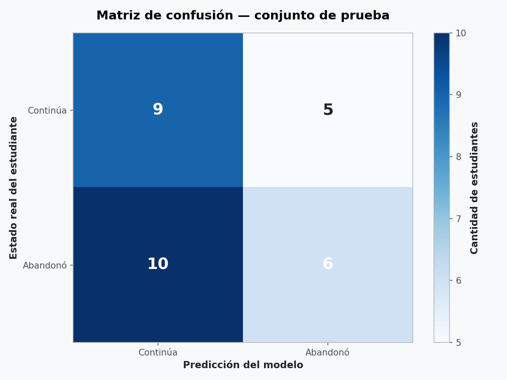
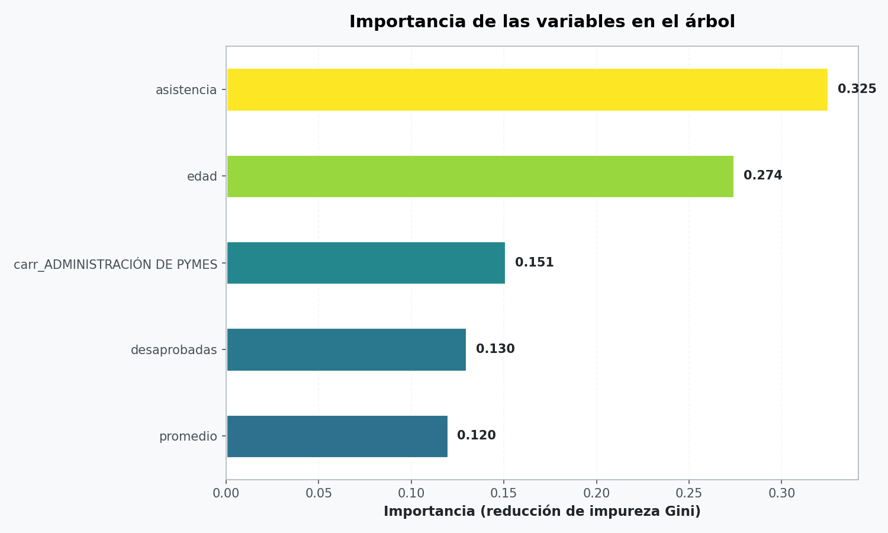
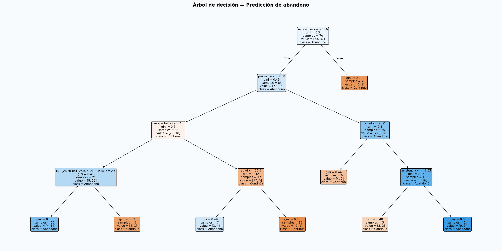

Materia: Procesamiento de Aprendizaje Automático
Docente: Scudero, Yanina Ximena
Alumno: Lucas Nahuel Llanes
Carrera: Tecnicatura Superior en Ciencia de Datos e Inteligencia Artificial
Año: 2026
El presente informe documenta la aplicación de un Árbol de Decisión para predecir el abandono de estudiantes en carreras terciarias. El objetivo es identificar tempranamente a los estudiantes con mayor riesgo de desertar, para que la institución pueda implementar estrategias de acompañamiento focalizadas.
El trabajo se compone de dos partes: el script Python (AD.py) que implementa todo el pipeline, y este informe HTML que documenta el código, los resultados y las visualizaciones generadas.
El dataset contiene información histórica de 100 estudiantes con las siguientes variables:
AD.pyEl script se organiza en 6 bloques principales, más funciones auxiliares:
train_test_split estratificado 70/30 + DecisionTreeClassifier.def localizar_planilla(palabra_clave):
"""Busca el primer .xlsx que contenga la palabra clave."""
coincidencias = [f for f in glob.glob("*.xlsx")
if palabra_clave.lower() in f.lower()
and not f.startswith("predicciones")
and not f.startswith("~$")]
if not coincidencias:
raise FileNotFoundError(f"No se encontró ningún .xlsx con '{palabra_clave}'")
print(f"Planilla cargada: {coincidencias[0]}")
return coincidencias[0]def limpiar_y_codificar(df):
"""Normaliza y codifica el DataFrame."""
df = df.rename(columns=RENOMBRE).copy()
for columna in ["genero", "carrera", "trabaja", "extracurriculares"]:
df[columna] = df[columna].astype(str).str.strip()
df["carrera"] = (df["carrera"]
.str.replace("TÉCNICATURA", "TECNICATURA")
.str.replace("TECNICATURA SUPERIOR EN ", ""))
df["genero"] = df["genero"].map({"m": 0, "f": 1})
df["trabaja"] = df["trabaja"].map({"No": 0, "Si": 1})
df["extracurriculares"] = df["extracurriculares"].map({"No": 0, "Si": 1})
if "estado_final" in df.columns:
df["estado_final"] = df["estado_final"].map({"Abandonó": 1, "Continúa": 0})
return dfSe entrenó un árbol de decisión con los siguientes hiperparámetros:
| Parámetro | Valor | Motivo |
|---|---|---|
criterion | "gini" | Impureza de Gini como medida de división |
max_depth | 4 | Árbol poco profundo, interpretable |
min_samples_leaf | 5 | Evita hojas con muy pocos casos |
random_state | 42 | Reproducibilidad |
X_train, X_test, y_train, y_test = train_test_split(
X, y, test_size=0.3, random_state=RANDOM_SEED, stratify=y)
arbol = DecisionTreeClassifier(
criterion="gini", max_depth=4, min_samples_leaf=5, random_state=RANDOM_SEED)
arbol.fit(X_train, y_train)
Figura 1: Matriz de confusión — conjunto de prueba. El modelo comete errores en ambos sentidos (5 falsos positivos y 10 falsos negativos).
El árbol entrenado le asigna mayor importancia a la asistencia y la edad, seguidas por la carrera Administración de Pymes, desaprobadas y promedio.
| Variable | Importancia |
|---|---|
| asistencia | 0.325 |
| edad | 0.274 |
| carrera: Administración de Pymes | 0.151 |
| desaprobadas | 0.130 |
| promedio | 0.120 |

Figura 2: Importancia de las variables según la reducción de impureza Gini.

Figura 3: Árbol de decisión entrenado (profundidad 4). El primer corte es por asistencia <= 93.16.
Para verificar si las importancias son reales o producto del azar, se repitió el entrenamiento con 5 divisiones train/test distintas:
| División | Accuracy prueba | Variables principales |
|---|---|---|
| 0 | 0.57 | aprobadas, extracurriculares, edad |
| 1 | 0.43 | carrera Adm. Pymes, edad, carrera Radiología |
| 2 | 0.33 | promedio, edad, género |
| 3 | 0.67 | aprobadas, carrera Ciencia de Datos, extracurriculares |
| 4 | 0.37 | edad, promedio, asistencia |
Se aplicó el modelo entrenado sobre la planilla DatosFinal (100 estudiantes nuevos sin etiqueta). Se generó el archivo predicciones_DatosFinal.xlsx con dos columnas adicionales:
Prediccion: "Abandonó" o "Continúa".ProbAbandono: probabilidad estimada por el árbol.resultado["Prediccion"] = ["Abandonó" if p == 1 else "Continúa"
for p in arbol.predict(X_nuevos)]
resultado["ProbAbandono"] = arbol.predict_proba(X_nuevos)[:, 1].round(2)
resultado = resultado.sort_values("ProbAbandono", ascending=False)
resultado.to_excel("predicciones_DatosFinal.xlsx", index=False)| Archivo | Contenido |
|---|---|
matriz_confusion.png | Matriz de confusión del conjunto de prueba |
importancia_variables.png | Gráfico de barras de importancias Gini |
arbol_decision.png | Visualización completa del árbol entrenado |
predicciones_DatosFinal.xlsx | Predicciones ordenadas por probabilidad de abandono |
ccp_alpha).El árbol de decisión demostró ser una herramienta interpretable, pero en este caso no permitió predecir el abandono con una precisión mejor que el azar. El accuracy en prueba (0.50) es menor que el de un modelo trivial que siempre predice "Abandonó" (0.53), y las variables "importantes" cambian por completo al modificar la división train/test.
El valor principal del trabajo está en haber aplicado una metodología rigurosa que incluye: análisis de medias entre clases, comparación contra un modelo trivial, validación cruzada, prueba de estabilidad con múltiples divisiones, y una comunicación honesta de las limitaciones.